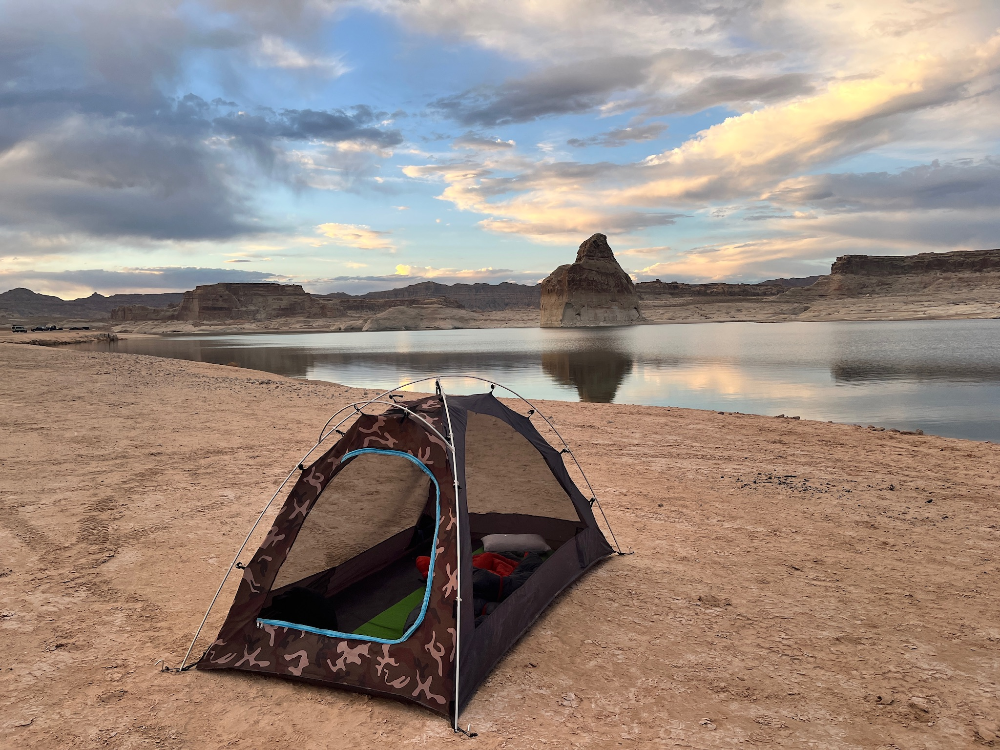
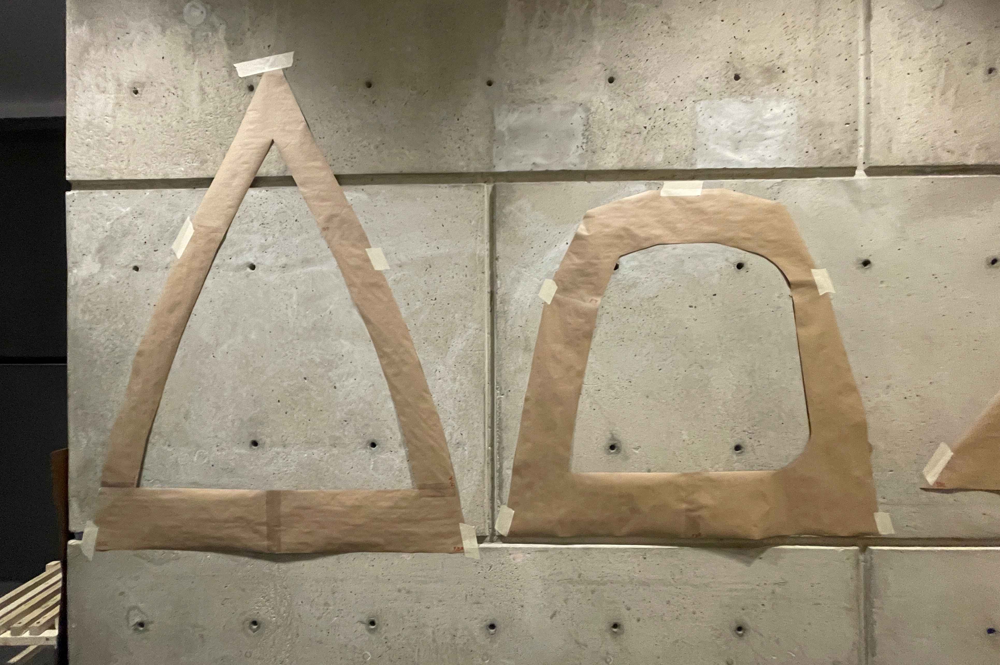

Iteration 3
In our third iteration, we focused on refining the fit and functionality of the tent. This phase introduced improvements in material efficiency, feature integration, and overall comfort, resulting in a more streamlined, functional, and user-friendly tent experience.
Goals and Objectives
In this phase, we aimed to:
- Use fewer pieces of fabric and refine our pattern so that it perfectly fits our pole structure
- Improve lighting integration by finding a way to incorporate the extra length of lighting
- Increase window size
- Adjust pocket placement and size to maximize storage and convenience

Interior Improvements
We redesigned the interior space to maximize comfort and functionality. New features included improved storage solutions, better ventilation, and enhanced privacy options. The layout was optimized for both solo and group camping scenarios.

Sustainability Enhancements
This iteration saw significant improvements in environmental performance. We implemented more sustainable materials, improved energy efficiency, and enhanced the tent's ability to maintain comfortable temperatures in various conditions.
Challenges Faced
Key challenges in this iteration included:
- Determining precise measurements to adjust our digital patterns by to best fit our pole structure
- Managing excess lighting length for seamless integration
- Repositioning pockets to balance accessibility and interior space
- Optimizing interior space for various use cases
Key Learnings
This iteration provided valuable insights that guided our future development:
- Small design refinements can enhance both construction techniques and functionality
- Creative feature integration improves user experience without adding bulk
- Need for adaptable interior configurations
- Significance of ventilation in overall comfort